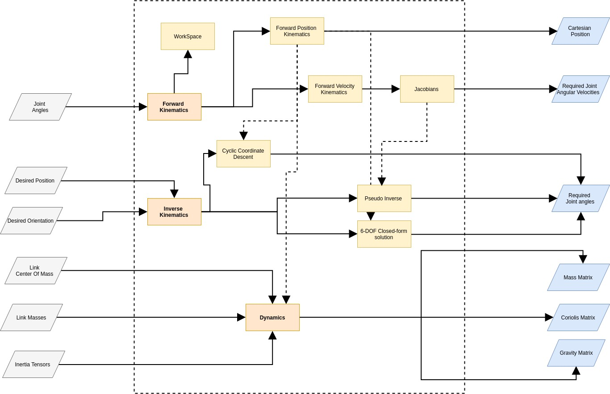
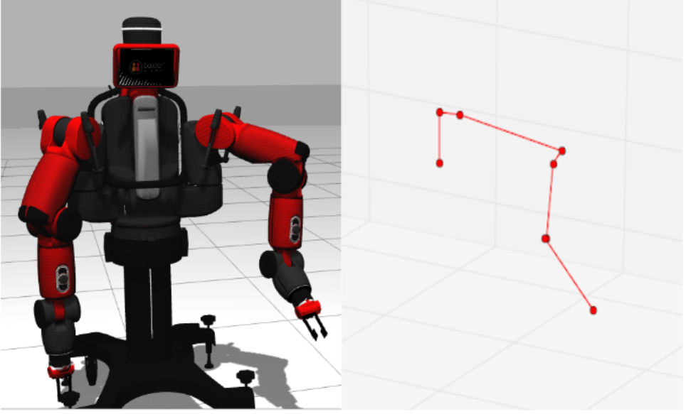

FEBRUARY - APRIL 2017 | Prof. Gregory Fischer
LINK TO COMPLETE PROJECT REPORT
OBJECTIVE
To develop a complete Kinematics and Dynamics Library for the 7-DOF arm of the Baxter robot. The libray includes solutions to Forward and Inverse Position and Velocity Kinematics and the M, C and G matrices required to build the dynamical models of manipulator arms along with workspace analysis and building blocks for null-space optimization
I worked on Cyclic Coordinate Descent Inverse Kinematics Solution for the robot and computation of the Mass, Coriolis Effect and Gravity matrix via the Euler-Lagrangian methodology using the Uicker-Kahn formulation as well as the standard joint-angular velocity formulation
RESEARCH ASPECTS
• Real-time feasible Inverse Kinematics solutions satisfying joint-angle limits
• Developmemt of a library with direct interface to the Baxter robot
• Determination of the almost "half-a-million" coefficients of the M, C and G matrices

FLow-Chart showing the modules of the library
METHODOLOGY
The software library was developed in Python 2 with a Object-Oriented setup that has modular sections for the various applications. The flowchart shown above gives a clear view of the various dependencies within the library and how indvidual modules contribute towards different solutions for the manipulator.
The Jacobian Pseudo-Inverse technique for Inverse Kinematics was desgined with random restarts when it hit any joint limit constraints while looking for a solution.
Cyclic Coordinate Descent algorithm iteratively tries to make the end-effector first converge onto a sphere with radius equaling the distance between the base of the manipulator and the end-effector and thereafter making the same converge onto the target position. However, it only solves for the position and not the orientation of the target pose.
The Euler-Lagrangian method to derive the dynamical model of a robotic manipulator incorporates the computation of Kinetic and Potential energies of the system parameterized by the joint angles, i.e. the orientation of the arm. Thereafter, computation of the Lagrangian and its derivatives with time
and joint variables results in the required dynamic model.

Forward Position Kinematics - Implementation on real robot model and skeleton model in simulation
RESULTS
• The Forward Position Kinematics solution had very comparative performance with the PyKDL package developed by the makers of Baxter, Rethink Robotics
• The Cyclic Coordinate Descent algorithm was able to solve for any given position within ~3 seconds for any random configuration but almost real-time solutions for way-points along a given path
• Pseduo-Inverse IK solutions along a given way-point performed well in real-time
• The developed library was successfully tested on a skeletal model of the robot arm as well as the actual Baxter robot in Gazebo simulation environment using the standard ROS interface
VIDEO RESULTS SHOWING IMPLEMENTATIONS
Cyclic Coordinate Descent IK Solution | Pseduo-Inverse IK Solution
IK solution implemented on Baxter in Gazebo simulation